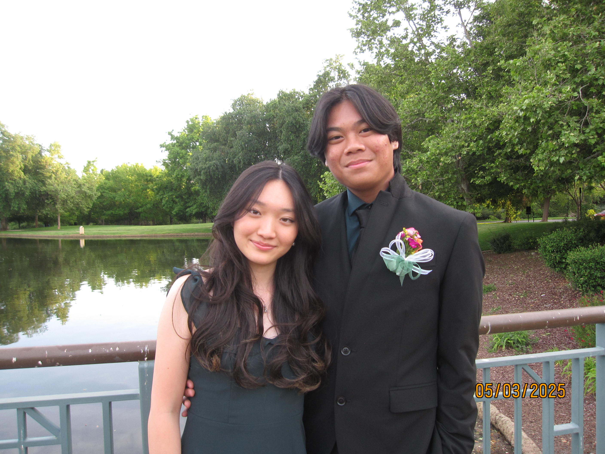
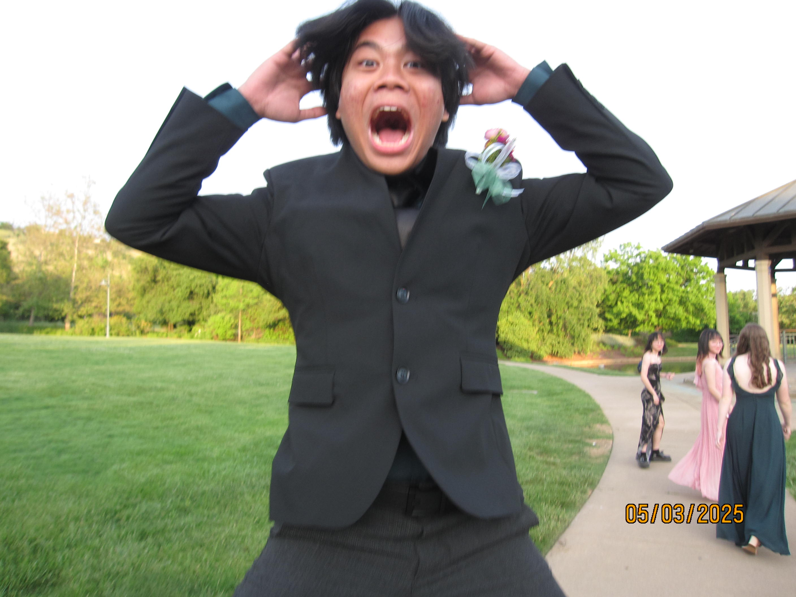
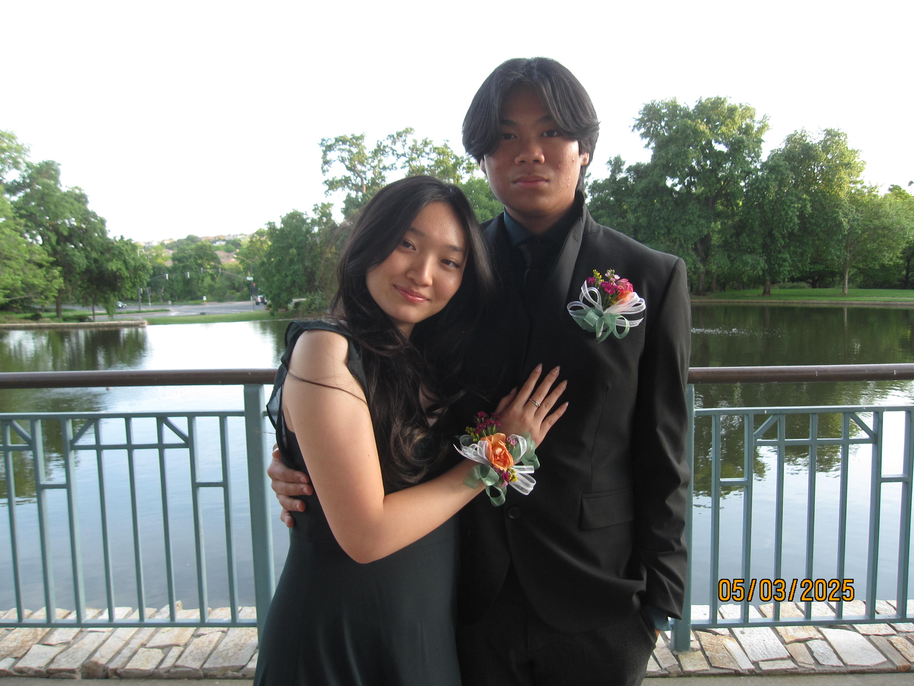
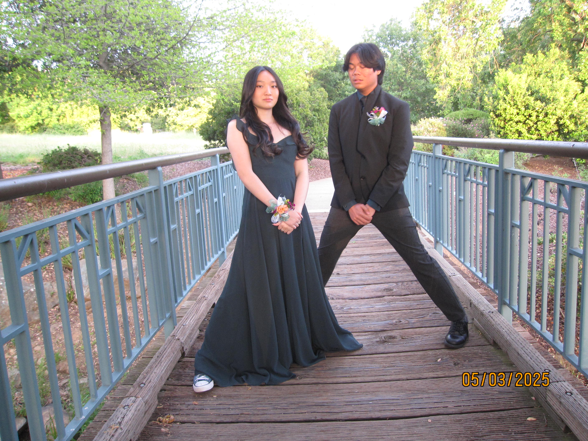
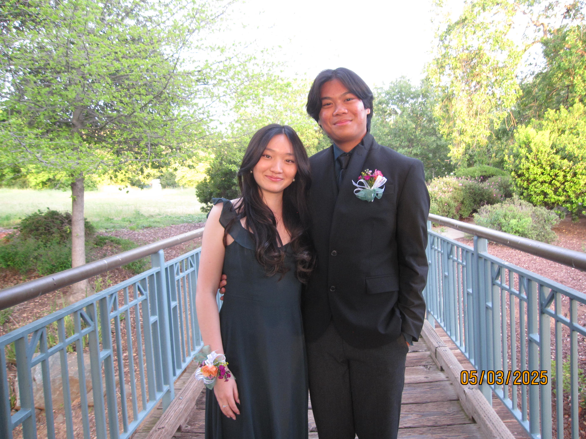
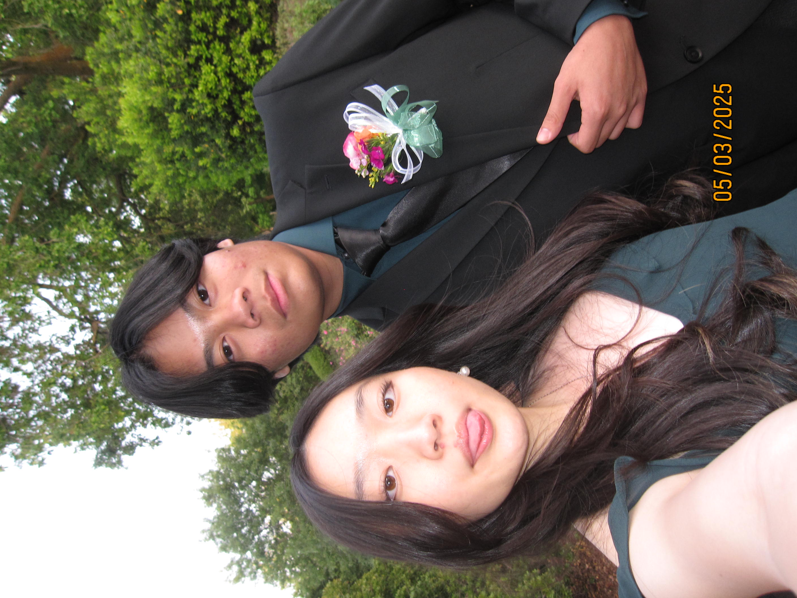
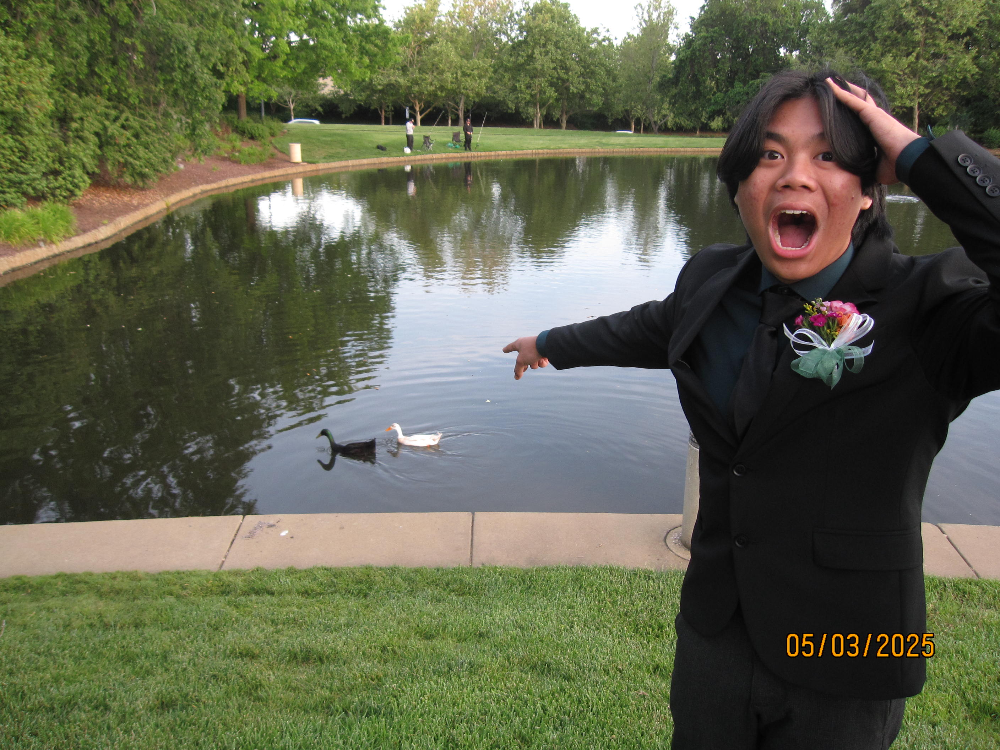
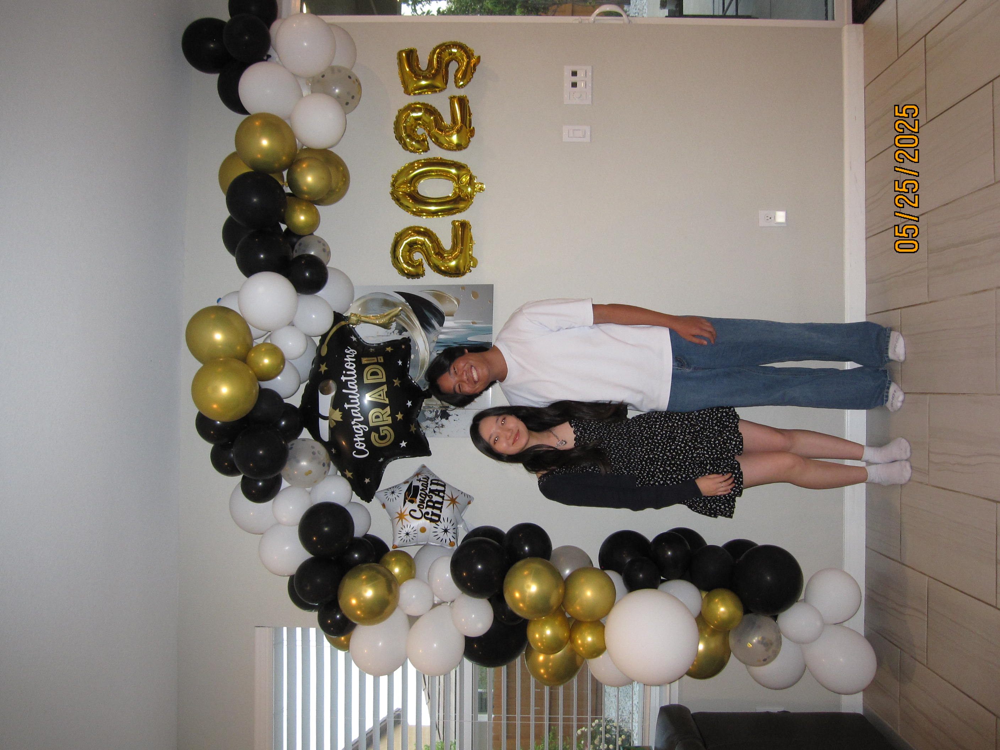
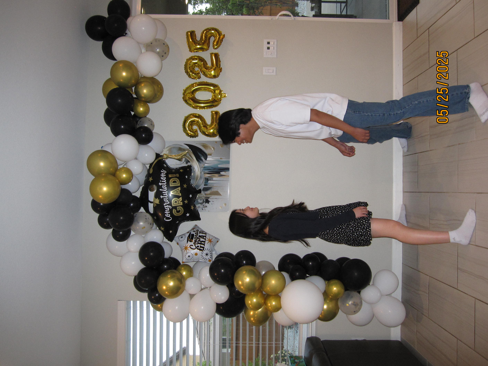
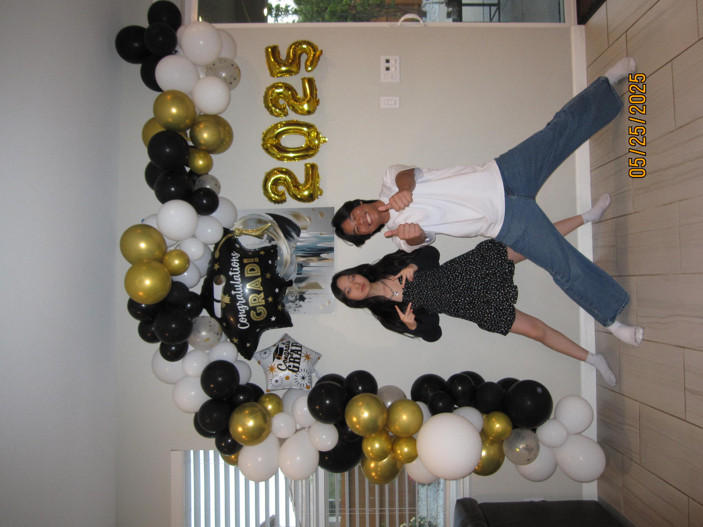

i did not really gaf about my prom atp i think i was really tired that entire week, BUT we got to spend so much time together week of and it made me really happy! very very sidenote: my hair was so much better at my prom but i did NOT lock in on my makeup like girl put any lippie on, but it was fire. i really liked taking goofy ahh photos with you and i really liked how you met a lot of my friends, it was lowkey a crazy crossover in my mind at the time, but i think being surrounded by all the people i love, including you, was just really nice! 10/10 would never do again but i'm glad we did go!
i love this pictures so much you're literally in the air and my friends are just in the back
   you're freaking aura farming while i'm being silly goofy. your eyes looks so preety in this!
A DUCK
vlogvlogvlogvlogvlog
twas the very first vlog i took on the digi....
this was another crazy crossover imo lit everyone that i routinely talked to at the time in one house... yo so if you couldn't tell i was so overstimulated this entire day and i was like deadass js tweaking the entire time, but you're such a comforting presence you made things better and i'm really glad you came to spend time w me and my friends!
lowkey... i really hate my side profile, but i like this picture a lot because i know i'm just looking into your eyes in our silly goofy ahh stance and i think it's really cute!
this is soso cute too! i wish the grad stuff wasn't there, but we look soooooooo tuff. i really love your smile in this; i feel like for a lot of people, they have different smiles like candidly and on camera, but i feel like this picture really captures your essence... and whatnot...?
